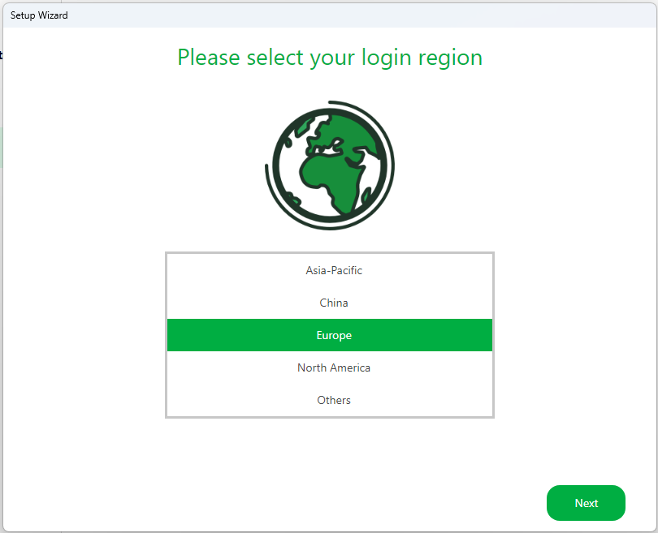
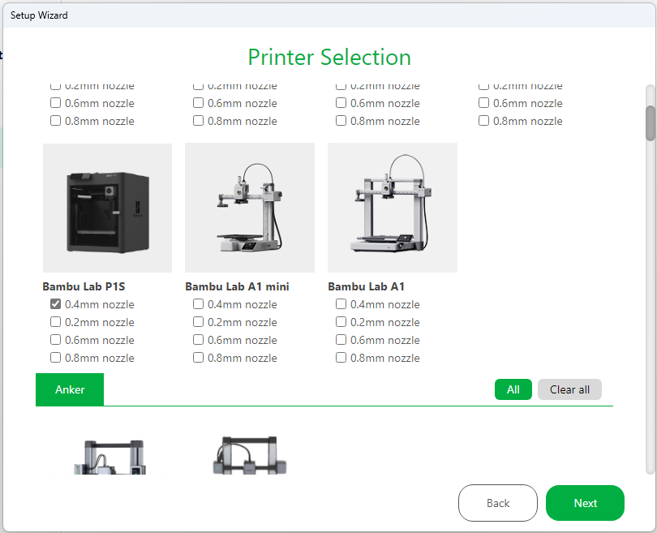
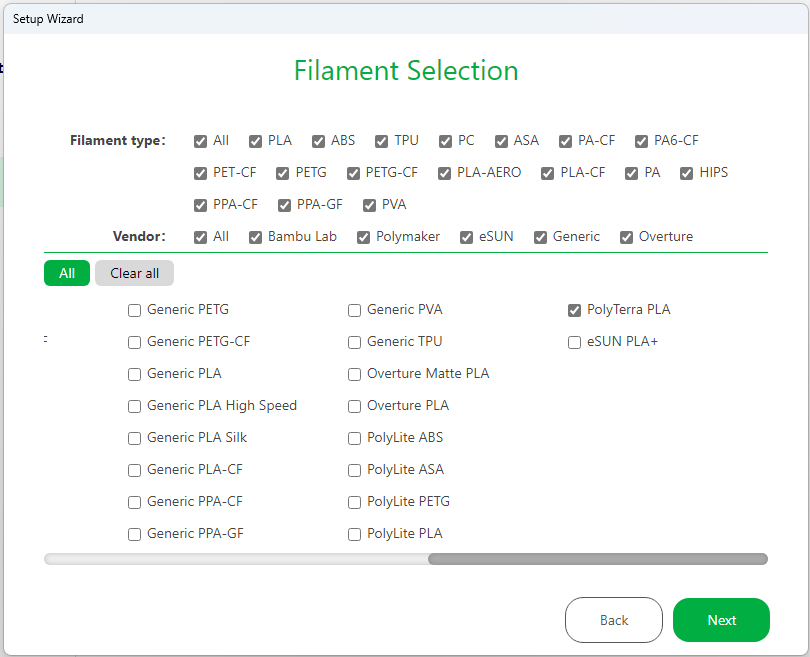
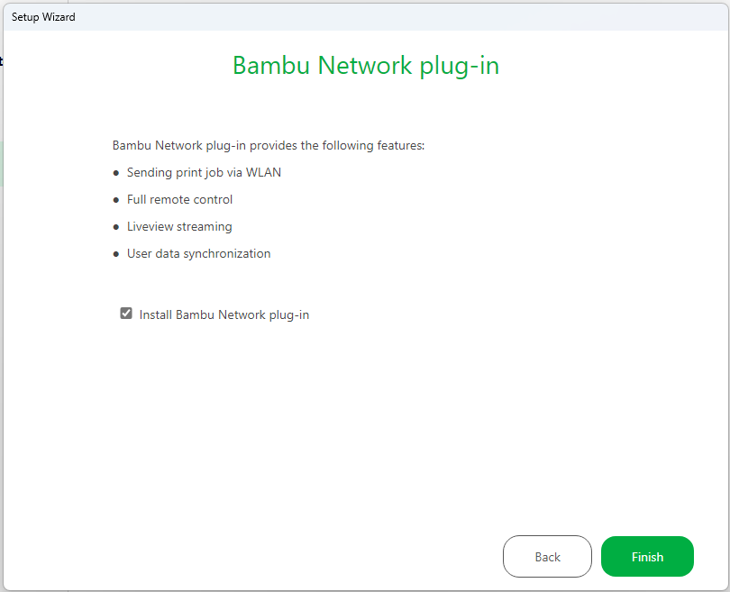
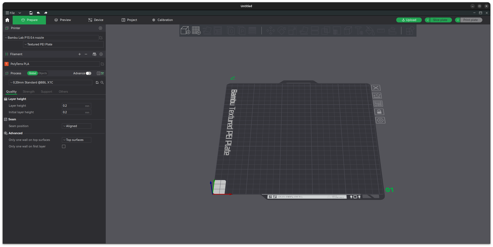
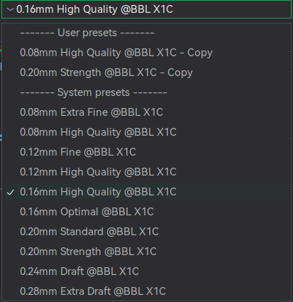

Quickstart
Programvare
- Bambu Studio (Desktop)
- Bambu Handy (Mobile)
Installasjonsguide
- Last ned og installer siste versjon av Bambu Studio
-
Konfigurer Bambu Studio slik:    
-
Logg inn med et delt brukernavn og passord
- Brukernavn: 3dprinter@omegapoint.no
- Passord: Se slack kanalen 3d-printing
- Bambu Studio støtter dessverre ikke deling av printere på noen annen måte enn ved å benytte samme innloggingsdetaljer.
- Gå til fanen Prepare og sørg for at de grunnleggende innstillingene er satt:
- Printer er satt til Bambu Lab P1S 0.4 nozzle
- Printer Plate er satt til Textured PEI Plate 
Innstillinger
Med mindre man har mye erfaring med 3D-printere er det ønskelig at man kun bruker de forhåndsdefinerte innstillingene for kvalitet og oppløsning av utskriften. Dette gjelder spesifikt ikke for en print som trenger support, typ en modell med mye overheng, da dette ikke er standard.

Support
Se Support
Printing
- Bruk Bambu Studio til å slice modellen og noter hvor lang tid det vil ta å skrive ut modellen
- Book plass på møterommet 3D-Printer i Outlook for tiden man planlegger å printe
- Sørg for at det ikke finnes noe plast på byggeplaten. Av og til kan det være nødvendig å vaske byggeplaten, se Vaske byggeplata
- Verifiser at det er nok plast i fargen du ønsker å bruke
- Start printen
- Observer enten ved kamera eller fysisk at de første lagene av printen printes uten problemer, hovedårsaken til at en print feiler er typisk at de første lagene ikke blir bra.
- Hent den ferdige modellen, og rydd opp etter deg. Sjekk at "poop chuten" er tom og fjern den lille kalibreringsstripa fra fronten av byggeplata.